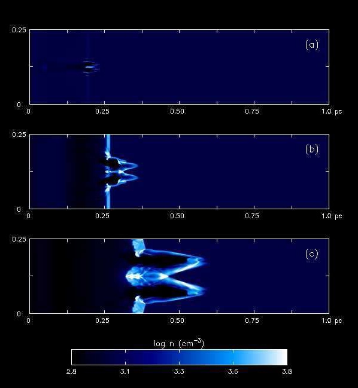

IEEE Visualization 2008 Design Contest
This page describes the format and semantics of the data files for the contest. See the Data Download page to get copies of the actual data.
Data Set Description
Numerical simulations of the first stars in the universe reveal that they formed in isolation several hundred million years before the first primitive galaxies were assembled and that they were very massive: 100 - 500 solar masses. With surface temperatures greater than 100,000 K they were millions of times brighter than the sun, with most of their light in the form of hard (energetic) UV radiation. These UV photons could not simply stream into the universe because they were capable of ionizing H and He into ions and free electrons. Instead, they advanced behind an abrupt wall of radiation known as an ionization front (or I-front) at well below the speed of light. The I-front itself is the extremely thin layer separating the hot (20,000 K), completely ionized gas from the cold (72 K), neutral gas beyond the front.
The radiation wave at first propagates supersonically through space, leaving gas undisturbed in its wake, but then slows as it recedes from the star. The hot ionized gas drives a shock that overtakes and pushes past the front, and the radiation wave is subsonic thereafter. The shock driven by the radiation front snowplows ambient gas into a dense layer that can erupt in violent dynamical instabilities as shown in the figure below from [1]. There, the initially planar I-front sweeps over a spherical blob of gas and is deformed by it. The dimple destabilizes and fragments into a jet, a phenomenon known as a shadow instability. I-front instabilities endow nebulae in the galaxy today with spectacular morphologies (such as the "pillars of creation' in the Eagle Nebula) and recent numerical work confirms they were also present in those of the first stars.
Besides being aesthetically pleasing, instabilities in primordial radiation fronts clumped gas that might have later collapsed gravitationally into the next generation of stars, accelerating the formation of the first galaxies. While we have numerical proof of their existence, much remains unknown about these beautiful structures in the primeval universe and how they may have fostered subsequent star formation. The scientists need your help as visualization experts to unravel the role of I-front instabilities in structure formation in the early universe.
The scientists performed three-dimensional radiation hydrodynamical calculations of ionization front instabilities in which multifrequency radiative transfer is coupled to eight species primordial chemistry. They simulated ten scalar fields: particle density, temperature, and 8 chemical species. The velocity field is also simulated. Detailed information about the simulation and results found to date are in [1] and [2].

The figure above, from [1], shows a shadow instability. The images above show a 2D slice through the data set of the logarithm of density over time as the instability progresses towards the right. Figure (a) is from 1.9 thousand years (kyr) into the simulation, (b) is from 4.9 kyr, and (c) from 12.6 kyr.
The scientists have not yet seen a 3D animation of the density distribution over time, much less a multivariate visualization of the interactions between multiple data sets over time. This is your chance to be part of new discoveries about the way the universe formed!
Region
The simulation propagates through a volume of space that is 0.6 by 0.25 by 0.25 parsecs on a side. Element (0,0,0) is at the lower bottom corner of the volume; it is a right-handed coordinate system with X being the longest axis and Y and Z being the same size. There are 200 simulation time steps covering 25.37 thousand years.
Data Format
Coordinate System
In this simulation, the region is treated as a flat Cartesian box. This volume is divided into regular squares with a 0.001 parsec spacing in all directions in the pre-decimated mesh, creating a 600x248x248 point regular mesh. This results in a mesh consisting of 36.9 million regular cubes. The output data is saved as single file per time step.
Time: The original simulation stored the state of the entire volume approximately every 126.8 years. This was calculated for a total of 25,370 years for a total of 200 time steps. The actual time corresponding to each time index is stored here; the values range from around 126 years to around 128 years between steps.
Data Layout
All simulation data is saved in ASCII format. The data is saved in files with no headers. To enable proper interpretation of the data, we specify the x,y,z dimensions of the mesh and data types that the floating points represent, the units of the data, and the order in which the indices change.
There are two types of data here: scalar (temperature, mass density, chemical species), and vector (velocity). All of the scalar fields for one time step are stored in a single gzip-compressed ASCII file named multifield.XXXX.txt.gz, where XXXX is the time step index (starting at 0000).
Line format: The values for each grid cell are laid out in a line that ends with a single ASCII newline (character 10, 0a in hexadecimal) except the last line, which has no terminating character. Each line has ten values, separated by a single space. There is no space between the last character of the last value and the newline ending the line. Each value is represented in scientific notation an optional '-' sign, then one digit, then a decimal point, then three more digits, then 'E', then + or -, then a three-digit exponent. An example line (the first line from the first line from multifield.0030.txt) is shown here:
8.563E+002 2.051E+004 4.180E-004 7.596E-001 5.260E-005 6.898E-002 1.710E-001 8.053E-011 2.686E-013 8.650E-012
There is one such line for every grid point in each file. There is one file per time step in the simulation. The X indices value most rapidly, then Y, then Z; the first line in the file refers to element (0,0,0); the second to element (1,0,0); the last to element (599,247,247).
The order of the ten columns on each line is:


{kind=link}